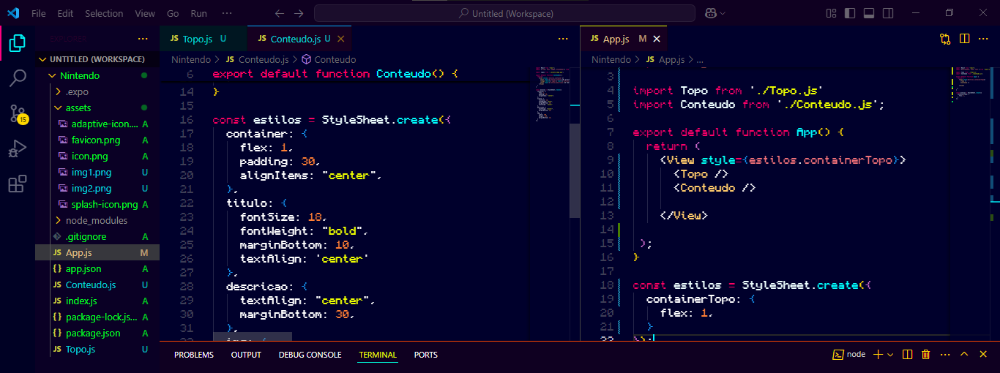
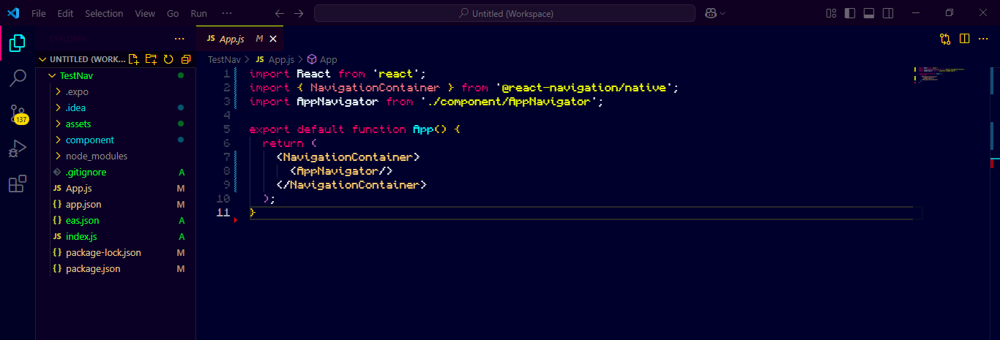
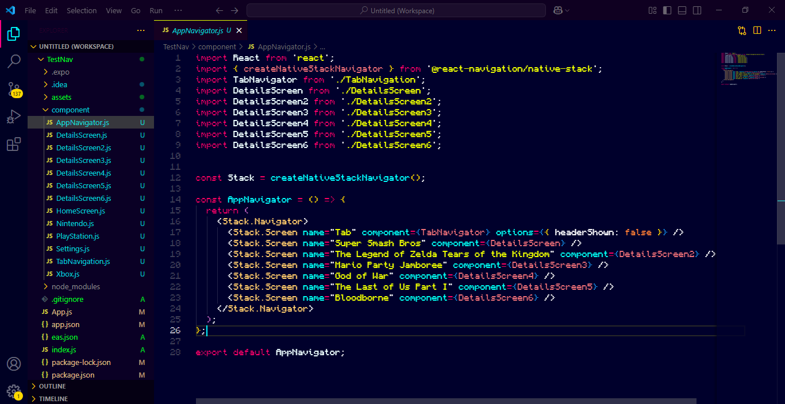
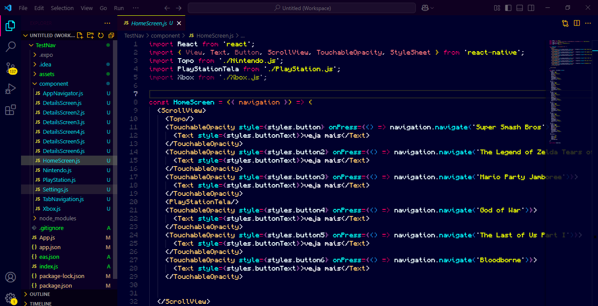
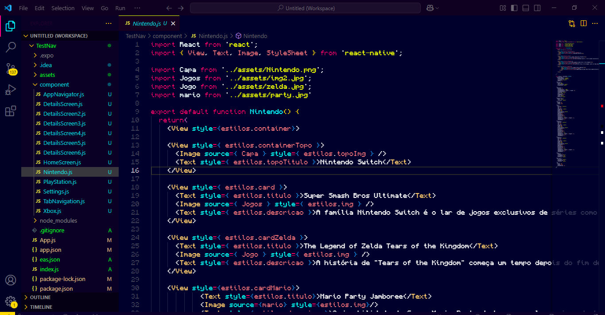

Olá novamente!! aqui eu vou explicar alguns passos do meu primeiro projeto pessoal feito com React-Native.
Eu tive uma ideia de criar uma pequena biblioteca de jogos, que explica sobre gameplay, Histórias, curiosidades e mais.
A bibliteca não tem exatamente um nome então pode chama-la do que quiser haha!.
Infelizmente eu não tenho boas imagens dele pronto :( mas... ainda tenho alguns registros de quando estava construindo ele.
obs: aqui está um link do mediafire para baixar o apk (100% seguro) clique aqui
Aqui eu tinha o começo do projeto, estava uns dias desenvolvendo e pensando como iria fazer toda a estrutura certinha.
Mas depois de pensar mais um pouco eu rebootei toda estrutura de componentes do projeto. Fazendo algo mais separado e organizado componente por componente.
o componente "App.js" ficou como pricipal para fazer toda a navegação, mas também tive que criar os componentes para o StackNavigation e também o TabNavigation.
Criei um componente chamado "AppNavigator" para ficar por cima da "HomeScreen" e onde também seria importado para o componente princípal "App.js".
Partindo pro "HomeScreen" foi onde eu fiz toda a importação e separei os componentes que mostram todo o App o topo da Nintendo, PlayStation, os Cards dos jogos e os botões.
E por ultimo aqui está dentro de um componente que completa toda a visualização. Aqui dentro foi onde eu fiz toda a parte da Nintendo no App, desde o header até os cards.
